Перейти на главную страницу справочника.
Пересчет трёхфазного электродвигателя в однофазный конденсаторный.
Формулы для пересчёта трёхфазного электродвигателя в однофазный конденсаторный.
- Число витков в пазу рабочей обмотки. N - количество витков в пазу трёхфазного двигателя, Uc - напряжение однофазной сети, Uф - напряжение фазы трёхфазного электродвигателя, при линейном трёхфазном напряжении 220/380 вольт Uф=220, при линейном трёхфазном напряжении 380/660 вольт Uф=380. Значение коэффициента k для схем укладки в которой рабочая обмотка занимает 2/3 пазов сердечника статора, а пусковая 1/3 пазов сердечника статора: при 2р=2 k=0,5-0,6, при 2р=4 и более k=0,6-0,7. Значение коэффициента k для схем укладки, в которой рабочая и пусковая обмотки занимают одинаковое количество пазов сердечника статора: при 2р=2 k=0,67-0,7, при 2р=4 и более k= 0,7-0,8.
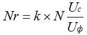
- Сечение провода рабочей обмотки. S - сечение провода трехфазного двигателя, N - количество витков в пазу трехфазного двигателя, Nr - количество витков в пазу рабочей обмотки однофазного двигателя.
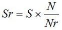
- Число витков в пазу пусковой обмотки. Nr - количество витков в пазу рабочей обмотки однофазного двигателя.
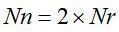
- Сечение провода пусковой обмотки. Sr - сечение провода рабочей обмотки.
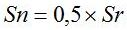
- Ток рабочей обмотки. I - ток трёхфазного двигателя при соединении фаз обмотки в звезду, S - сечение провода трёхфазного двигателя, Sr - сечение провода рабочей обмотки.
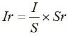
- Ток пусковой обмотки. Ir - ток рабочей обмотки, Nr - количество витков в пазу рабочей обмотки, Nп - количество витков в пазу пусковой обмотки.
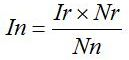
- Мощность однофазного электродвигателя по приближённой формуле. Uc - напряжение однофазной сети, Ir - ток рабочей обмотки.
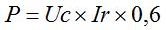
- При данном пересчете трёхфазного электродвигателя в однофазный не учитывается количество параллельных ветвей, в итоге получается количество параллельных ветвей в рабочей и пусковой обмотках равно количеству параллельных ветвей в обмотке трёхфазного электродвигателя.
Пример пересчета трёхфазного электродвигателя в однофазный конденсаторный.
- Для примера пересчета трёхфазного в однофазный конденсаторный возьмем двигатель 5АИ100S2У3 мощность 4,0 кВт. 3000 оборотов в минуту, напряжение питания U=220/380, ток A=14,6/8,15. Электродвигатель имеет следующие обмоточные данные: диаметр провода d=0,8×2 (в два провода), витков в пазу n=25, количество параллельных ветвей a=1, шаг обмотки по пазам у=11;9, количество пазов статора Z1=24.
- Сначала нужно рассчитать схему укладки однофазной обмотки, для однофазного конденсаторного электродвигателя лучше выбрать схему укладки в которой рабочая обмотка занимает 2/3 пазов сердечника статора, а пусковая 1/3 пазов сердечника статора рисунок №1. Шаг: рабочей обмотки у=11;9;7;5, пусковой обмотки у=11;9.
{kind=link}
- Рассчитываем количество витков в пазу рабочей обмотки, где N - количество витков в пазу трёхфазного двигателя, Uc - напряжение однофазной сети, Uф - напряжение фазы трёхфазного электродвигателя при 220/380=220 вольт, при 380/660=380 вольт. После расчета получилось: количество витков в пазу рабочей обмотки Nr=13.
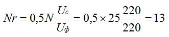
- Сечение провода рабочей обмотки, где S - сечение провода трехфазного двигателя, N - количество витков в пазу трехфазного двигателя, Nr - количество витков в пазу рабочей обмотки однофазного двигателя. После расчета получилось: сечение провода рабочей обмотки S=1,93, для рабочей обмотки возьмем провод диаметром d=1,56 мм.
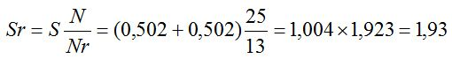
{kind=link}
- Рассчитываем количество витков в пазу пусковой обмотки, где Nr - количество витков в пазу рабочей обмотки однофазного двигателя. После расчета получилось: количество витков в пазу пусковой обмотки Nп=26.
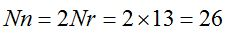
- Сечение провода пусковой обмотки, где Sr - сечение провода рабочей обмотки. После расчета получилось: сечение провода пусковой обмотки Sп=0,965, для пусковой обмотки возьмем провод диаметром d=1,12 мм.
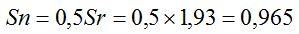
- Пересчет трёхфазного электродвигателя в однофазный конденсаторный завершен. Получился однофазный электродвигатель с следующими обмоточными данными: рабочая обмотка - количество витков в пазу Nr=13, диаметр провода d=1,56; пусковая обмотка - количество витков в пазу Nп=26, диаметр провода d=1,12, количество параллельных ветвей в рабочей и пусковой обмотках а=1.
- Прежде чем приступить к первому запуску и подбору рабочего конденсатора для однофазного электродвигателя, требуется рассчитать ток в рабочей и пусковой обмотках. Формула для расчета тока в рабочей обмотке однофазного двигателя при числе параллельных ветвей а=1, где I - ток трёхфазного двигателя при соединении фаз обмотки в звезду, S - сечение провода трёхфазного двигателя, Sr - сечение провода рабочей обмотки.
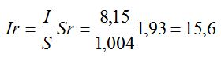
- Ток в пусковой обмотке при числе параллельных ветвей а=1 рассчитываем по формуле, где Ir - ток рабочей обмотки, Nr - количество витков в пазу рабочей обмотки, Nп - количество витков в пазу пусковой обмотки.
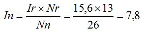
- После расчета получилось: максимальный ток в рабочей обмотке 15,6 А, максимальный ток в пусковой обмотке 7,8 А. Мощность однофазного электродвигателя по приближённой формуле.
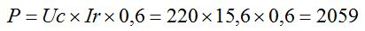
- Для запуска и нормальной работы однофазного двигателя питающая сеть должна выдерживать пусковой ток, а ток при пусковом моменте будет примерно семикратным току в рабочей обмотке 15,6×7=109,2 А. Напряжение конденсаторов не менее 450 вольт.
- Подбирать емкость рабочего (Ср) и пускового (Сп) конденсаторов электродвигателя на холостом ходу (без нагрузки).
- Увеличивая или уменьшая емкость конденсатора, добейтесь хорошего запуска двигателя. Если электродвигатель не запускается (обычно такое происходит у электродвигателей на 3000 об. мин.), придётся проточить на токарном станке алюминиевые короткозамыкающие кольца ротора. Сечение короткозамыкающих колец нужно уменьшить на 20-50%, тем самым увеличатся сопротивление ротора и скольжение. Обычно после увеличения сопротивления ротора электродвигатель запускается легко.
- После того как двигатель запустился замерьте ток холостого хода в рабочей обмотке электродвигателя. Ток холостого хода в однофазных и трёхфазных асинхронных электродвигателях зависит от частоты вращения. Чем меньше обороты электродвигателя, тем ближе ток холостого хода к номинальному току электродвигателя. Если ток холостого хода электродвигателя на 3000 об/мин. примерно 40-60% от номинального, то ток холостого хода электродвигателя на 250 об/мин. будет примерно 80-95% от номинального тока указанного на табличке. Так как мы подбираем рабочий конденсатор для однофазного двигателя 3000 об/мин., то ток на холостых оборотах должен быть 40-60% от максимального тока в рабочей обмотке. После расчета максимальный ток в рабочей обмотке однофазного электродвигателя 15,6 А, ток при холостом ходе должен быть от 6 до 9 А.
- Что делать если двигатель запускается хорошо, но ток в рабочей обмотке при холостом ходе близок или превышает 15,6 А. Запустите двигатель и после разгона отключите часть конденсаторов, в работе оставить примерно 30-50% от общей емкости. Уменьшая или увеличивая емкость рабочего конденсатора, подбираем ток холостого хода однофазного электродвигателя от 6 до 9 А. Конденсатор который всегда остается в цепи обмотки однофазного электродвигателя называется рабочим (Ср), конденсатор используемый только для запуска электродвигателя - пусковой (Сп). После установки электродвигателя на оборудование возможна корректировка пускового конденсатора в сторону увеличения емкости, емкость рабочего конденсатора изменять запрещено.
- Ток холостого хода однофазного электродвигателя в норме, ток в пусковой обмотке не должен превышать 7,8 А.
- Схема №1 подключения однофазного конденсаторного электродвигателя к сети.
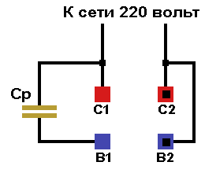
- Схема №2 подключения однофазного конденсаторного электродвигателя к сети с пусковым конденсатором.
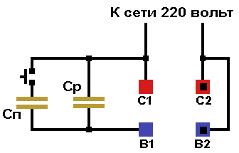
- Схема соединений однофазной обмотки, количество параллельных ветвей а=1.

- Схема соединений однофазной обмотки, количество параллельных ветвей а=2.
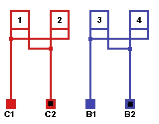
23.03.2012 г.
Литература по данной теме:
Девотченко Ф.С. "Переделка трёхфазных электродвигателей на однофазные с заменой обмотки." 1991 г.
Кокорев А.С. "Справочник молодого обмотчика электрических машин" 1979 г.
Мещеряков В.В., Ченцов И.М. "Пересчет электрических машин и таблицы обмоточных данных" 1950 г.